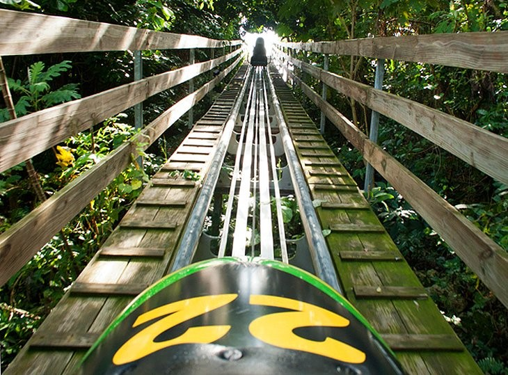
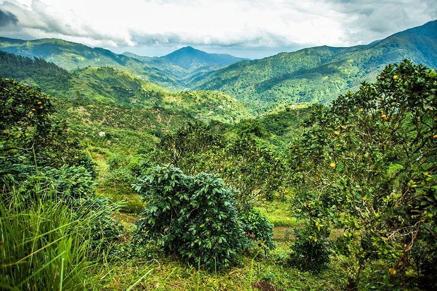
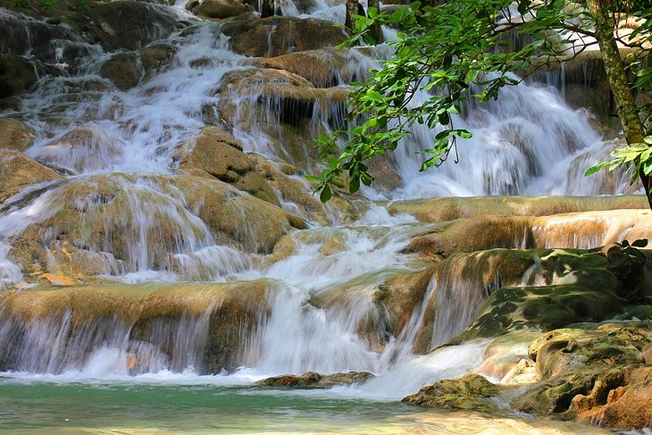
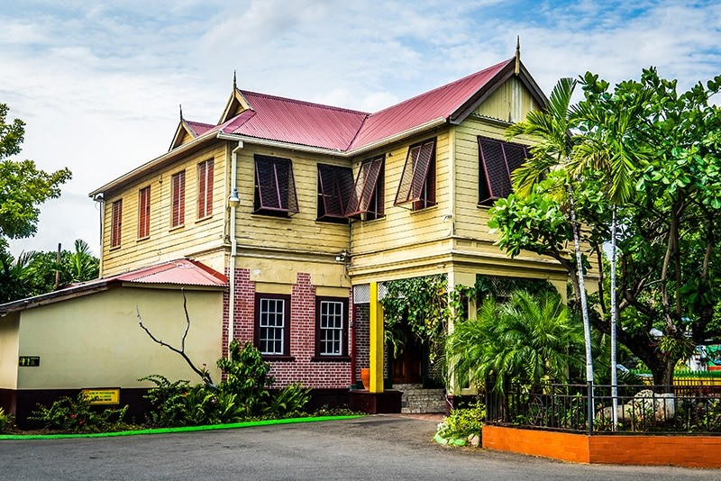
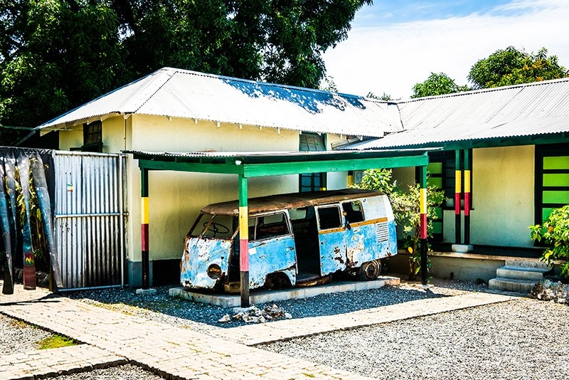
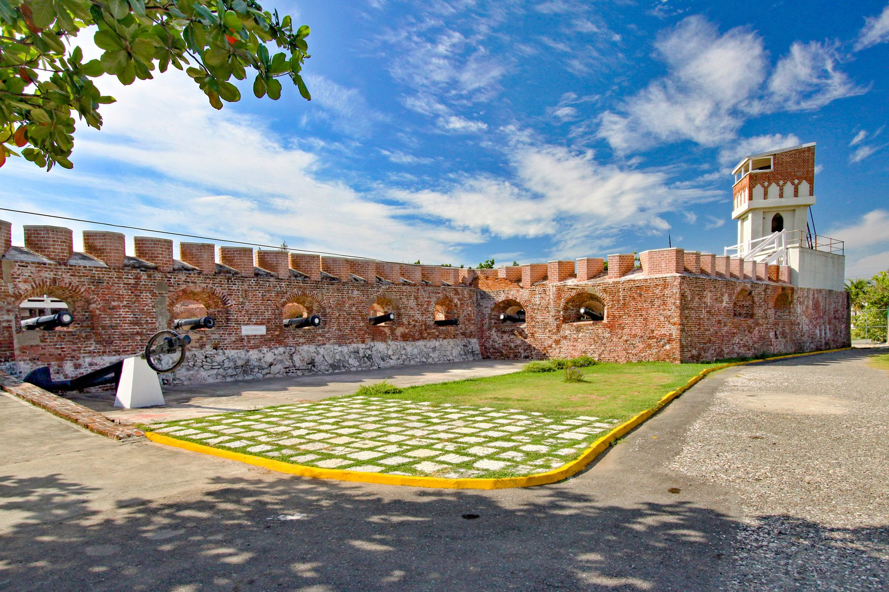
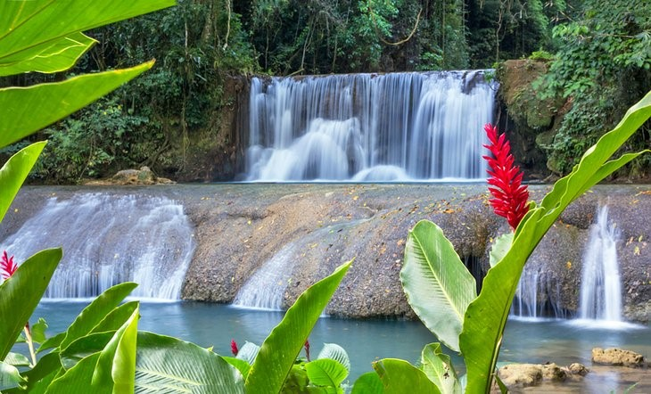

Rainforest Mystic Adventures in Ocho Rios
Adrenaline fix Head to Rainforest Adventures Mystic Mountain in Ocho Rios. Here you can zoom down the mountain on Bobsled Jamaica, a single-person roller coaster ride through the forest, or glide through the treetops on zip lines. You can also enjoy panoramic views of the town and sea on the Sky Explorer, a chairlift ascending the mountain.
Other attractions here include guided nature walks, butterfly and hummingbird gardens, a ropes course, rides, an infinity pool and waterslide,
and a climbing wall.
Blue and John Crow Mountains National Park
Blue and John Crow Mountains National Park is rich with natural and cultural heritage with various coffee plantations and was Once a refuge for former slaves and the indigenous Taino, who fled here to escape slavery, The wildlife is also impressive. More than 800 species of endemic plants, 200 species of birds, Blue mountain peak offers thrilling views, and on a clear day, you can see all the way to Cuba
Black River
Dunn’s River Falls is unique, and just like Reggae, the 180 foot high and 600 foot long landmark is world famous. It stands as a living testament to Jamaica’s natural beauty and is the most popular of all the Jamaican falls, attracting millions of the world’s visitors each year. A brisk 1 hour and 30 minute hike will take you on an exhilarating adventure through lush surroundings, with pools you can swim in dotting the way to the summit. At the base of the waterfall, you will find both its defining feature, and what makes it so unique. The falls empty into the sea at Little Dunn’s River Beach, making Dunn’s River falls one of the few travertine waterfalls in the entire world
The Bob Marley Museum
The Bob Marley Museum was once the home of the iconic Robert Nesta Marley. The former home, now a museum features 19th-century architecture and each room remains as it was when he resided there, displaying some of Marley’s personal items. The museum tour includes a short documentary on Marley’s life in an 80 seat theatre, a photo gallery and record shop. Additionally, the site houses the One Love Café and Marley Memorabilia Gift Shop. Bob Marley was not only an international musician.

Fort Charles
Let your explorations begin with Fort Charles, where you can explore the history of Port Royal, and find out more about the people from this Jamaican village near Kingston Harbour. Fort Charles was constructed in the mid-1600s by the English, after their historic invasion of the island. The Fort played a significant role in their defense in times of war, and still today there are several canons standing around the Fort. One of the highlights of this tour is the museum experience, which is made that much more engaging by a knowledgeable and passionate museum curator
Mangroves
Fringed with mangroves, the Black River is the longest in Jamaica, and you can tour this tranquil river on a guided boat tour. Nature lovers will be in heaven. Crocodiles and more than 100 species of birds, including herons and snowy egrets, are among the critters that make their home here.